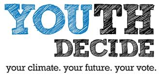
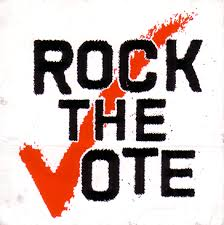
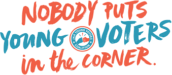

Did you know many states allow 17 year olds to vote in the primaries? 22 states now allow citizens who will be 18 years old on or before a general election to vote in their party’s corresponding primary or caucus. Look up your state to find its policy on early voters.
Find my StateMany young people cite feeling as though their vote doesn’t count, among millions of others, as their reason for not participating in elections. However much it may feel like this, it simply isn’t the case. Obama’s popularity with youth voters may have been one of the key factors that helped him to win the 2008 election, giving him a large margin over competitors in a number of key states. In recent years, many elections have come down to a few hundred votes, and the election debacle in 2000 is not to be forgotten anytime soon. You vote does matter, maybe more than you realize.
Participating in politics is a hard-won right in our nation, but it’s one that Americans of all ages don’t freely exercise as often as they should. Building a relationship with the political process early on is key to making it a lifelong habit. If you’ve always voted in elections, you’ll be much less likely to skip a vote in the future. This sort of habit-forming participation is key if we’re to create laws and elect leaders who represent the needs of both young and old alike in our country.
While young people make up a large portion of voters, they’re much less likely than those who are older to get out and vote. In the 2004 elections, 70% of those between 45 and 59 voted, 73% of those between 60 and 74, and 69% of those 75 and older. It’s not hard to guess that the needs, desires, and beliefs of those generations might be pretty different than young people’s, and the significantly higher numbers of older Americans who come out to vote may be skewing presidential choices and legislation away from the needs of young voters. If young voters want candidates to cater to their needs, they need to get out and vote.
